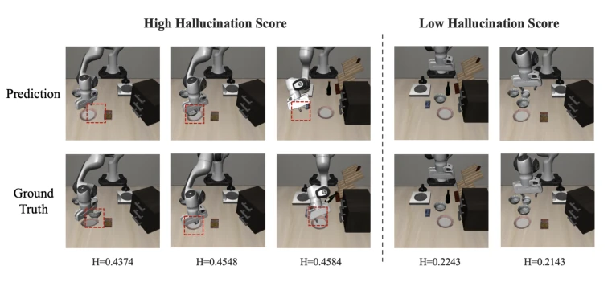
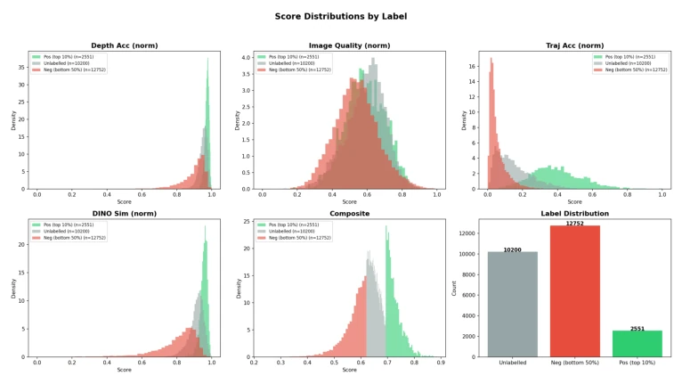
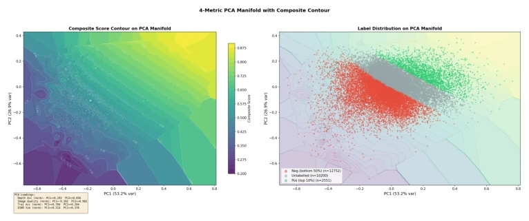
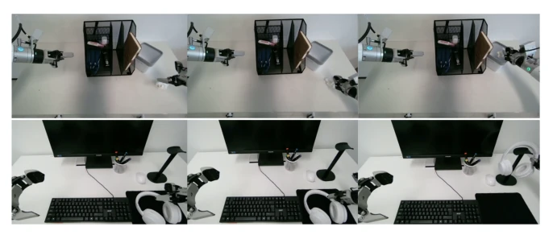
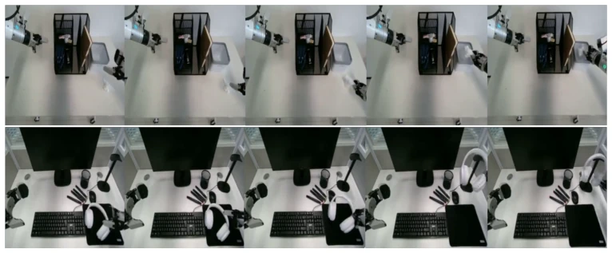

Figure 1: Illustration of the proposed hallucination-aware VLA reinforcement learning pipeline. (a) In standard world model-based RL, the VLA policy interacts with a learned world model to generate imagined trajectory rollouts, while hallucinated visual predictions may introduce biased reward sig- nals and lead to unstable policy updates. (b) Conditioned on VLA actions, the hallucination-aware model assesses the reliability of imagined trajectory rollouts from the world model and assigns a hallucination score to each rollout. (c) Our closed-loop pipeline incorporates hallucination scores into GRPO with the Reward-Soft mechanism to stabilize policy optimization.
Figure 2: Architecture of HAM. Predicted video frames, the current observation, the initial anchor image, and conditioning actions are encoded and fused to predict a chunk-level hallucination score. Higher scores indicate less reliable predictions.
Figure 4: Ablation study on α across three LIBERO task suites. A moderate penalty (α = 0.3) is preferred on Object and Spatial, while Goal benefits from a stronger penalty (α = 1).

Figure 5: World-model predictions with higher and lower HAM scores. Higher-scored examples exhibit more evident discrepancies from the corresponding observed frames, whereas lower-scored examples more closely match the observations.

Figure 6: Score distributions of world-model prediction chunks across four normalized metrics and the composite score, grouped by Pos (top 10%), Unlabelled (middle 40%), and Neg (bottom 50%). Trajectory accuracy shows the clearest separation between positive and negative samples; depth accuracy and DINO similarity are generally high but Neg exhibits a longer left tail; image quality distributions overlap heavily across groups; composite scores form three nearly non-overlapping bands, consistent with percentile-based labeling.

Figure 8: Two-dimensional PCA manifold of the four metrics: left, composite score contours; right, label scatter overlaid on faded contours. PC1 (53.2% variance) is driven mainly by trajectory accu- racy and DINO similarity; PC2 (26.9%) by image quality and depth accuracy. Composite increases diagonally, with Pos samples concentrated in the upper-right and Neg in the lower-left, showing that overall quality is geometrically separable in metric space and suitable as continuous supervision for the hallucination-aware model.

Figure 9: Real-world robot executions recorded during physical testing on the G1 robot. The upper row shows the Tissue-to-Box task, and the lower row shows the Headphone-on-Stand task. These images depict actual robot executions, not world-model-generated rollouts; aggregate success rates are reported in Table 2.

Figure 10: Selected world-model rollout frames for Tissue-to-Box (top), placing a tissue into a white storage box, and Headphone-on-Stand (bottom), placing headphones onto a stand. Frames are ordered chronologically from left to right. These examples illustrate action-conditioned visual predictions in physical manipulation scenes.